🔥
综合热度排名
6 大平台加权综合分，前 20 名一目了然。三金银铜徽章、平台排名彩签、昨日变化、概念标签全展示。
- 交易时段涨跌幅每 5 秒静默刷新
- 下拉/点 Tab 手动刷新，超时 20s 自动重试
- 主板过滤、自定义权重、排名条数可调
聚合 6 大平台 热度数据 — 同花顺、东方财富、通达信、大智慧、雪球、淘股吧。 可自定义权重、主板过滤、5 天走势追踪、智能提醒，后台持续播报 不错过任何重要资讯。 电脑、手机都能用，数据多端同步；桌面端更可联动通达信、唤出系统级悬浮球与悬浮窗常驻盯盘。
🔒 应用免费无捆绑、独立开发。若浏览器或 360 等提示「未知发布者 / 疑似风险」，属未签名证书的误报，请放心点击「仍要运行 / 允许」。
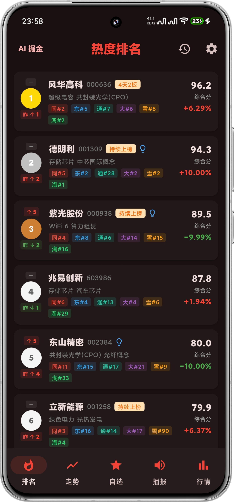
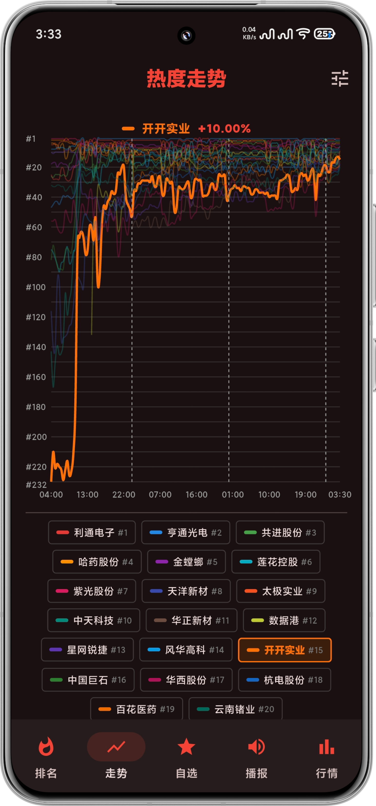
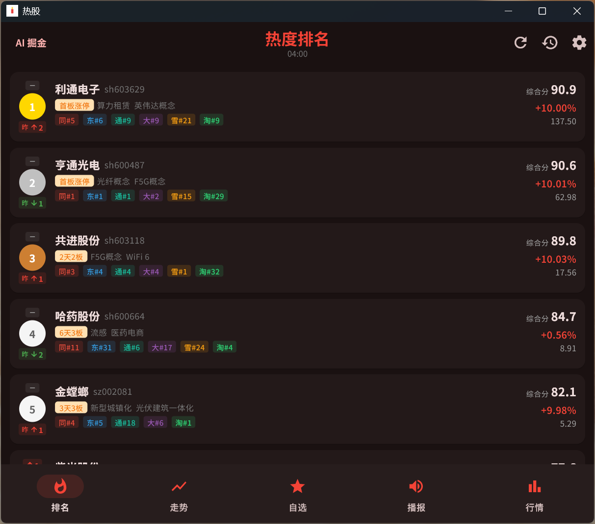
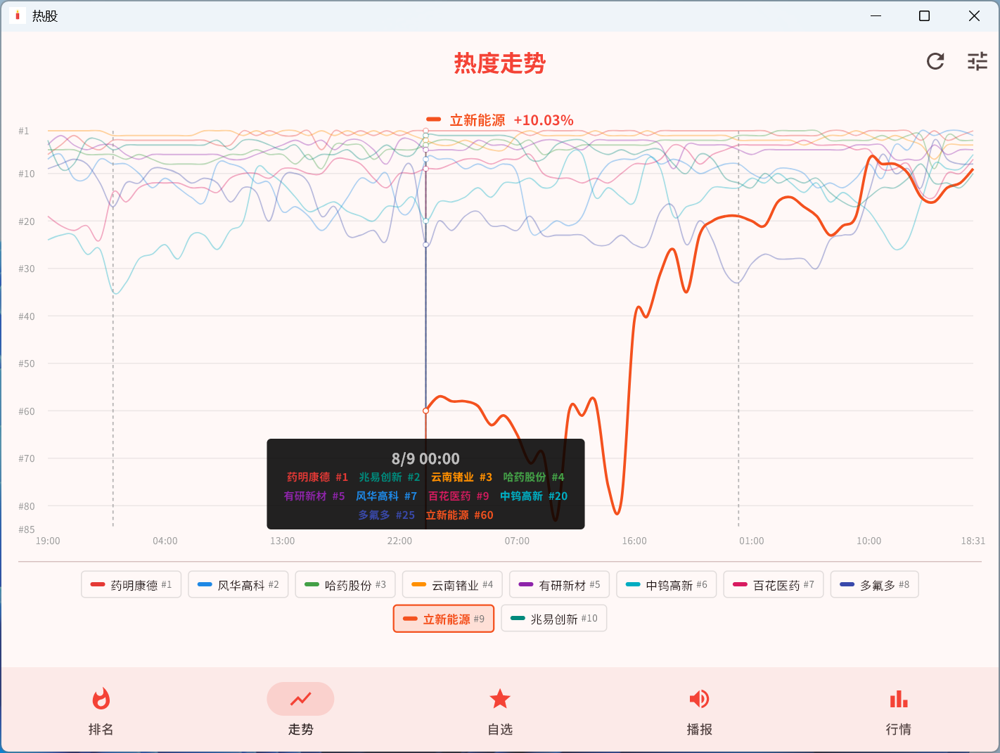
数据源覆盖全网主流平台 · 透明可定制权重
从全局热度到个股深度，从历史走势到 AI 智能分析，一个 App 全搞定。
6 大平台加权综合分，前 20 名一目了然。三金银铜徽章、平台排名彩签、昨日变化、概念标签全展示。
Y 轴反转折线图，1~50 名多线对比，点击高亮、底部固定 Tooltip。一眼看清哪只股票在悄悄爬升。
搜索加入、按时间分组、左滑删除、备注编辑。每只股票可设多条条件提醒，后台不漏触发。
大模型每日 8:30 / 14:30 自动分析精选资讯，挖掘 A 股利好方向与受益个股。会员还可手动「实时分析」。
财联社电报经 LLM 提炼标题与摘要，2 分钟一轮增量拉取。开启 TTS 后即使 App 在后台也能持续朗读。
实时追踪三大指数涨跌、涨跌家数、主力资金净流入与历史相似日，并内置手绘级 K 线图。
深色主题为主，红绿涨跌遵循 A 股习惯。每屏都是一处贴心的设计。
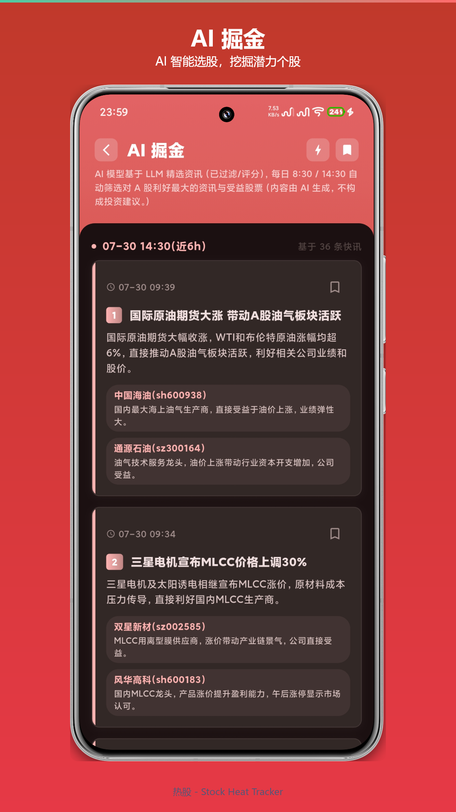
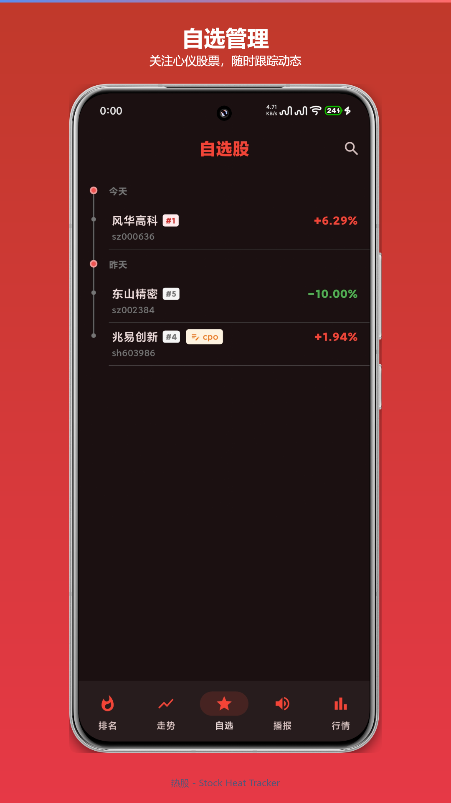
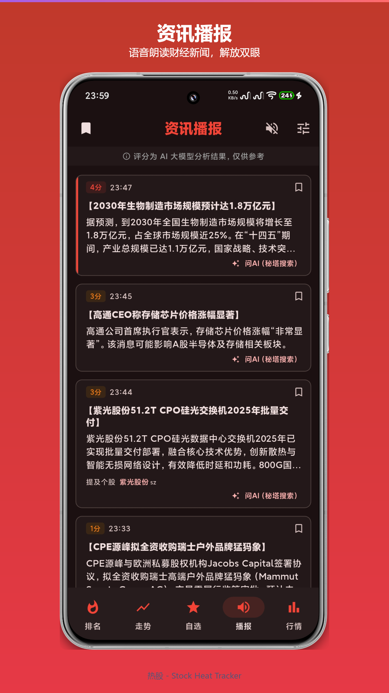
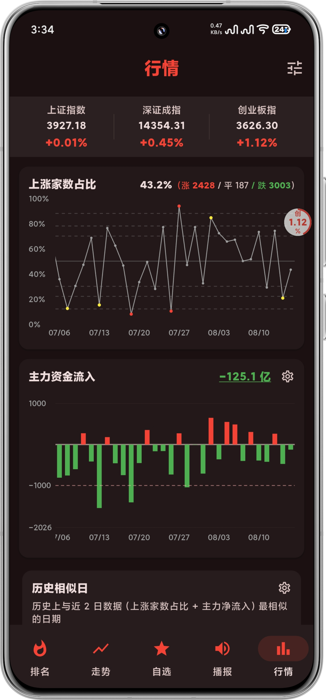
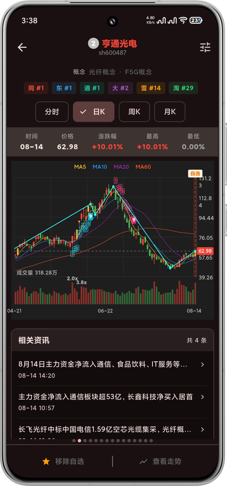
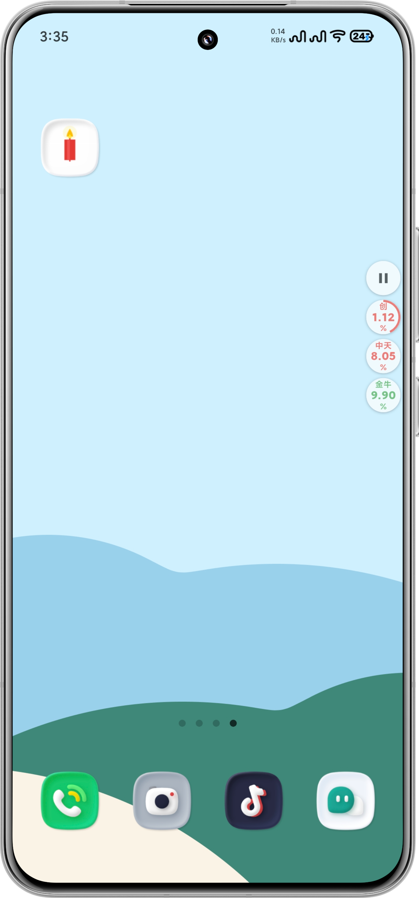
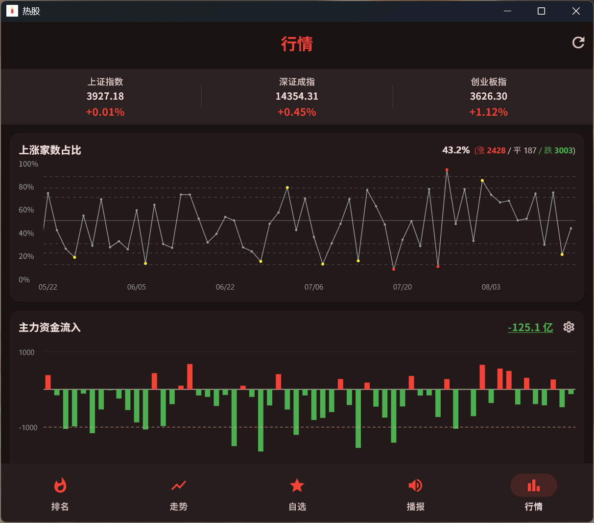
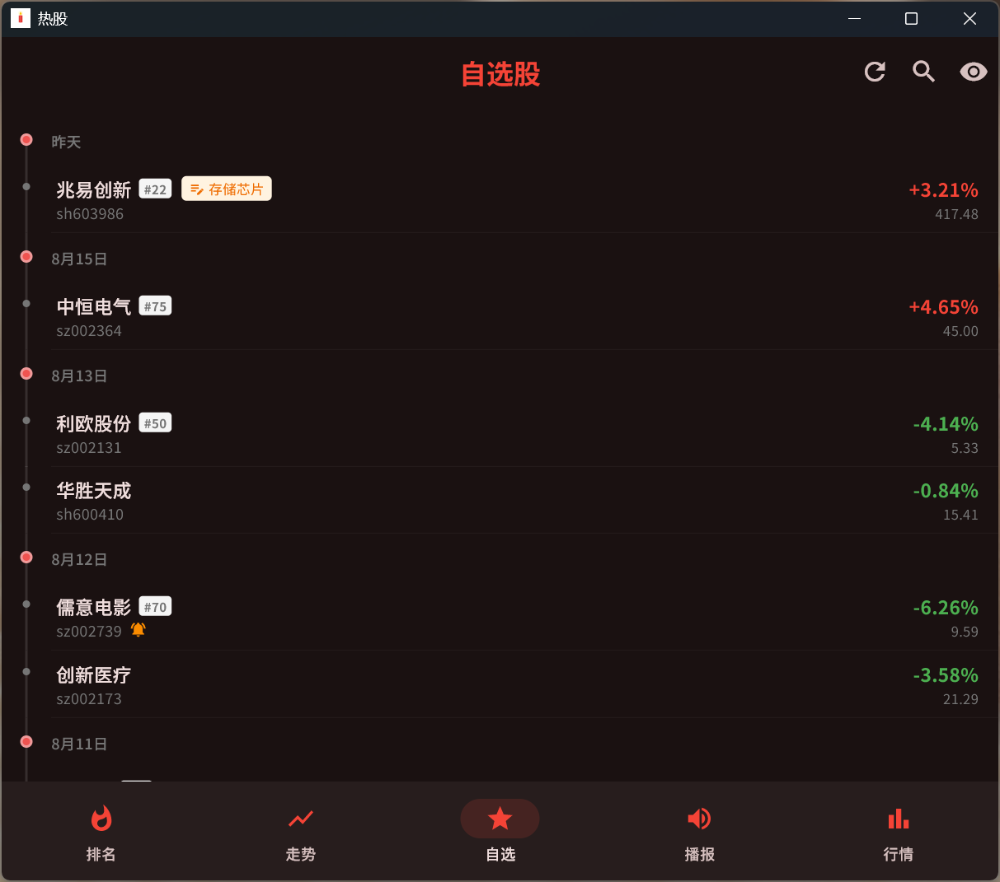
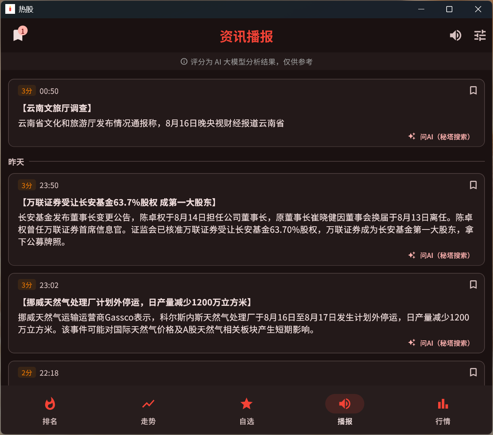
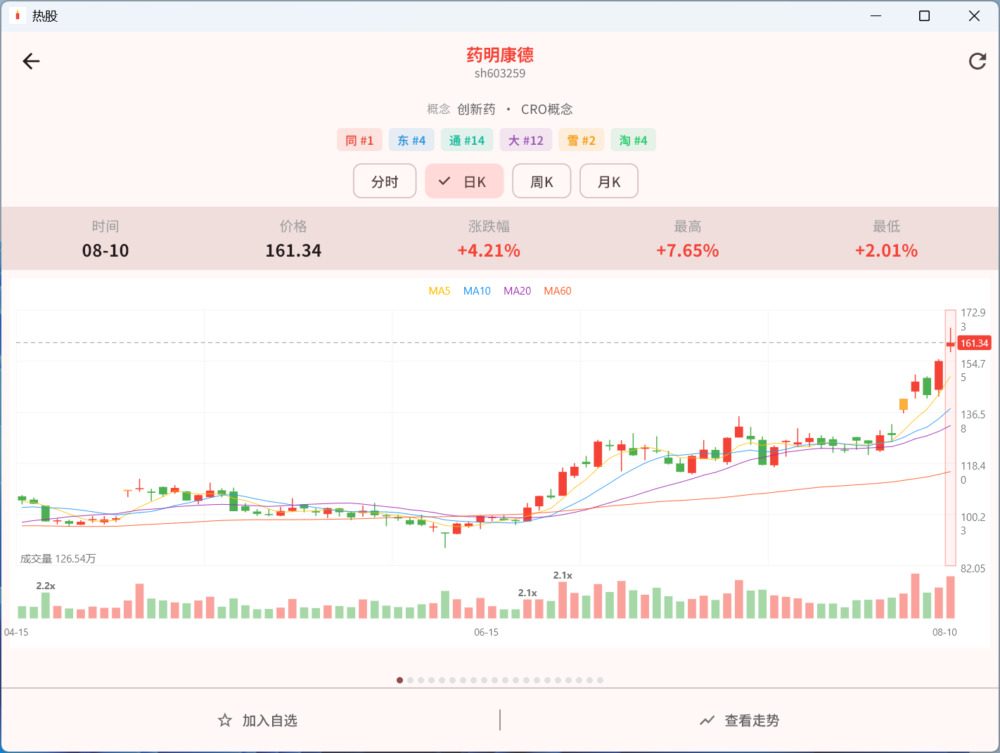
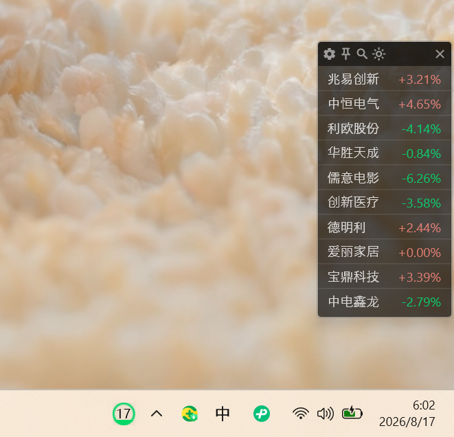
所有原始数据来自公开平台，抓取频率、缓存策略、鉴权签名全部开源可查。
平台权重 0~5 自由调节，主板过滤、排名条数、历史回看 0~72h 全部由你说了算。
免费版覆盖 90% 核心需求，会员（盘股掘金 PRO）解锁多线走势、悬浮球、实时分析等增强功能。
默认仅当前页轮询；订阅播报才常驻后台，并提供通知栏一键暂停。
手机、电脑都能用，数据多端同步。选择你的平台开始。
Google Play 安装 · Android 7.0+
数据本地保存，不上传任何隐私。
下载安装包 · Windows 10/11
支持大屏多窗、键盘快捷操作，盯盘更高效。
🔒 应用完全免费、无任何捆绑，仅由我一人独立开发。
若浏览器或 360 等安全软件提示「未知发布者 / 疑似风险」，属未购买代码签名证书导致的误报，文件不含任何恶意代码，请放心点击「仍要运行 / 允许」。
解锁多线走势（5+ 只对比）、更多排名条数（最高 50）、自定义权重、悬浮球、实时 AI 分析（5 次/日）等增强功能。
激活码为 24 位（形如 XXXX-XXXX-XXXX-XXXX-XXXX-XXXX），在「激活会员」页输入即可解锁盘股掘金 PRO。来源有两种：Google Play 订阅赠送（有效期与订阅时长一致）与闲鱼购买（1 个月 / 1 年两档）。每个激活码最多在 3 台设备（桌面端 + 安卓端合计）上激活，激活后不可解绑；重装系统或更换硬件可能改变设备指纹并重新占用一个名额，达 3 台上限需联系客服解绑旧设备。请妥善保管，遗失无法找回。
所有股票数据来自公开平台 API；个人配置（自选股、权重、提醒）仅保存在本机。隐私政策请参阅 denjay.qzz.io/privacy。
综合分 = 各平台排名归一化分 × 平台权重 之和。你可以自由调整权重、关闭/启用某些平台，因此不同账号排名可能不同。
目前支持 Windows 桌面端（Windows 10/11，下载 .msix 安装包即可）与 Android 移动端（Google Play 安装，或下载 APK 直接安装）。两端数据均保存在本机，无需注册账号，暂无 iOS 计划。
下载 .exe / .msix 安装包后双击运行，按提示完成安装即可。若系统提示「未知发布者」，属正常情况（未购买代码签名证书），点击「仍要运行」继续。安装包仅含本应用，无第三方捆绑。
⚠️ 关于安全软件的「风险」提示
盘股掘金是完全免费、无广告、无任何捆绑的个人独立开发应用。由于目前未购买代码签名证书， 部分安全软件（如 360、Windows SmartScreen）可能会提示「未知发布者」或「疑似风险」，这是误报，并非应用含有病毒。
安装包仅包含本应用本体，不读取、不上传任何隐私数据。若被拦截，请点击「仍要运行 / 允许」即可正常安装使用， 也可在杀软中将本程序加入白名单。后续我们会申请代码签名证书，从根源消除该提示。